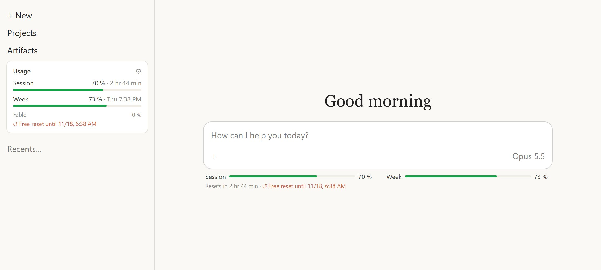

Už vás limit Claude nikdy nezaskočí
Bezplatné rozšíření prohlížeče, které ukazuje limit relace a týdenní limit Claude přímo na panelu nástrojů – s předpovědí, kdy limit vyčerpáte, spotřebou v Claude Code a upozorněními, dokud je ještě čas.
Funguje s Claude Pro, Max a Team · 27 jazyků · PRO od 0,99 € měsíčně


Podívejte se na 50sekundovou ukázku
Vše o vašich limitech Claude na první pohled
Jak to funguje
Časté dotazy
Jak zjistím svůj limit v Claude?
Na claude.ai můžete otevřít Settings → Usage (Nastavení → Využití). Usage Meter for Claude vám stejná čísla ukazuje neustále: procento je na ikoně v panelu nástrojů a vyskakovací okno zobrazuje aktuální relaci, týdenní limit a čas obnovení každého z nich – bez otevírání nastavení.
Co je 5hodinový limit relace v Claude?
Tarify Claude Pro a Max mají limit na relaci, který se obnoví 5 hodin po jejím začátku, a k tomu týdenní limit pro všechny modely. Rozšíření ukazuje oba, včetně týdenních limitů pro jednotlivé modely, a dá vám vědět, když začíná nová relace.
Funguje to s Claude Code?
Ano. Claude Code čerpá ze stejných limitů jako claude.ai, takže jeho spotřeba je zahrnutá v číslech relace i týdne – stejně jako spotřeba z desktopové aplikace a telefonu. Rozšíření se aktualizuje na pozadí, i když claude.ai nemáte otevřené.
Je to zdarma?
Ano. Spotřeba na ikoně, vyskakovací okno, oznámení, předpověď vyčerpání, spotřeba přímo na claude.ai a 7denní historie jsou zdarma. PRO (0,99 € měsíčně nebo 7,99 € ročně, 7 dní na vyzkoušení zdarma) přidává historii za 30 a 60 dní, několik účtů najednou a export do CSV.
Které tarify Claude jsou podporované?
Claude Pro, Max a Team. Bezplatný tarif Claude údaje o spotřebě neposkytuje, takže není co zobrazit.
Jsou moje data v bezpečí?
Rozšíření čte z claude.ai pouze procenta vaší vlastní spotřeby, a to prostřednictvím relace, ve které už jste přihlášeni. Nikdy nečte vaše konverzace a vývojáři se nic neodesílá – vše zůstává ve vašem prohlížeči. Žádná analytika, žádné sledování.